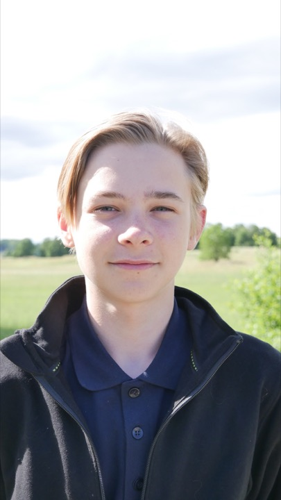

Zac
Zac arbetar med fönsterputsen och utvecklar företagets webbplats och bokningsupplevelse.
- Fönsterputs
- Webbutveckling
Om Berga Fönsterputs
Vi driver Berga Fönsterputs tillsammans med målet att göra det enkelt att boka lokal fönsterputs och lätt att veta vem som kommer hem till dig.

Vår idé
Berga Fönsterputs startades för att vi ville bygga något eget tillsammans och göra det enklare att få rena fönster utan att behöva lägga tiden själv.
Vi utgår från Åkersberga och hjälper kunder i Österåker, Täby, Vaxholm och ute i Stockholms skärgård. Du bokar online, ser priset innan du skickar och har kontakt med oss före och efter arbetet.

Personerna bakom
Vi arbetar båda med putsningen och delar på uppgifterna runt företaget.

Zac arbetar med fönsterputsen och utvecklar företagets webbplats och bokningsupplevelse.
Martin arbetar med fönsterputsen, bokningar och kontakten i företagets sociala medier.
Så arbetar vi
Du ska veta vilka vi är och enkelt kunna höra av dig om något behöver förtydligas.
Privatkunder ser arbetskostnad, material och tillägg innan bokningen skickas.
Vi planerar varje jobb utifrån adress, omfattning och hur fönstren går att komma åt.
Se priset för dina fönster och välj en tid som passar.